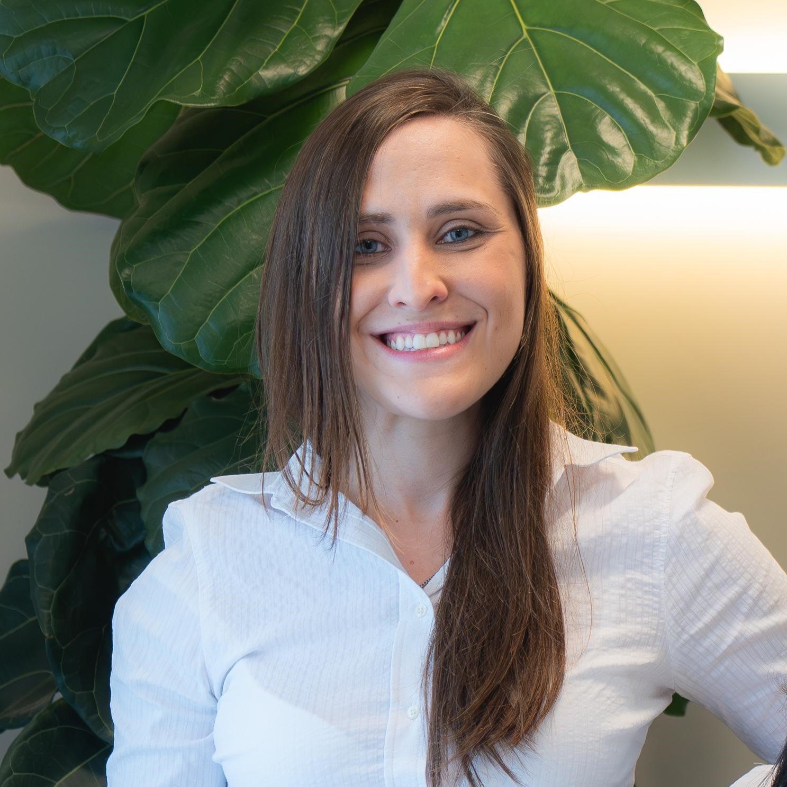

Conhecimento, acolhimento e cuidado em cada etapa da jornada — do primeiro sintoma ao acompanhamento contínuo, ao lado da sua família.

Sou médica especialista em Reumatologia Pediátrica e dedico minha atuação ao cuidado de crianças e adolescentes com doenças reumáticas, sempre buscando oferecer um atendimento individualizado, baseado em evidências científicas e, acima de tudo, humanizado.
A Reumatologia Pediátrica envolve condições que, muitas vezes, são complexas e exigem acompanhamento contínuo. Por isso, acredito que um tratamento de qualidade vai além da prescrição de medicamentos. É fundamental compreender a realidade de cada criança, esclarecer dúvidas, acolher as preocupações da família e tomar decisões de forma compartilhada.
Busco manter uma atualização científica constante para oferecer tratamentos baseados nas melhores evidências disponíveis, sempre respeitando as necessidades, os objetivos e as particularidades de cada paciente.
Atendo crianças e adolescentes com diversas doenças reumáticas, incluindo artrite idiopática juvenil, lúpus eritematoso sistêmico juvenil, dermatomiosite juvenil, vasculites, síndromes autoinflamatórias, esclerodermia, uveítes associadas às doenças reumáticas e outras condições musculoesqueléticas e autoimunes da infância e adolescência.
Cuidar da saúde de uma criança é também cuidar da tranquilidade de toda a família. Meu objetivo é que cada família encontre não apenas um tratamento, mas também segurança, acolhimento e confiança durante todo o acompanhamento.
Um resumo direto de cada condição. Toque em qualquer item para entender melhor.
Se seu filho apresenta um ou mais destes sinais, vale conversar com um especialista.
Atendimento presencial em Vila Clementino, São Paulo — SP, próximo ao Parque Ibirapuera e à estação Hospital São Paulo do metrô.
Consultas por videochamada para acompanhamento e primeira orientação, com a mesma atenção e cuidado do atendimento presencial.
Preencha os dados abaixo — o agendamento é finalizado direto pelo WhatsApp com a Dra. Beatriz.